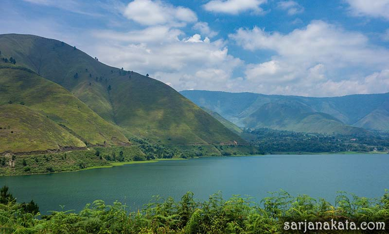

-
Air Terjun Kulu Kibuk

Wisata air terjun Kulu Kubuk Terletak di Desa Madobak, Kecamatan Siberut Selatan, Kabupaten Kepulauan
Mentawai, Propinsi Sumatera Barat.
Perjalanan ke Madobak memakan waktu sekitar 3 jam dengan menyusuri Sungai Rereget menggunakan perahu bermotor
yang
berukuran lebih kecil atau pompong. Sungai ini merupakan jalur menuju hulu dari pinggir laut di Muara Siberut.
Perjalanan menuju desa ini bisa lebih cepat, jika air sungai pasang. Namun jika air dangkal, perjalanan
menjadi sangat
lambat.
-
Pantai Awera

Salah satunya adalah Pulau Awera, yang berada didepan ibukota Tuapejat. Pulau kecil ini memiliki sebuah objek
wisata yang disebut sebagai Pantai Awera. Daya tarik utamanya adalah spot diving yang benar-benar indah dan
masih terawat. Ekosistem terumbu karang dan berbagai spesies ikan bisa Anda saksikan di Pantai Awera. Spot
divingnya semakin menarik, karena airnya yang berwarna biru jernih. Sehingga wisatawan bisa dengan jelas
menyaksikan keindahan alam bawah laut Pantai Awera.
-
Danau Rua Onian

Sebuah danau yang dikelilingi oleh pohon-pohon menghijau, adalah sajian utama Anda di sini. Begitu
melihatnya, Anda pasti terkagum dan tidak ingin cepat-cepat pergi dari sini. Duduklah sejenak dipinggiran
Danau Rua Oinan, untuk menyatu dengan alam dan mengusir segala penat didalam pikiran, bersama hembusan angin
sepo-sepoi yang senantiasa setia menemani Anda.